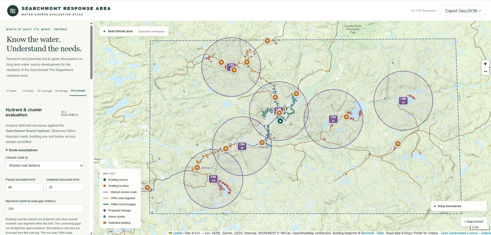

Migration to IBM watsonx.data intelligence
Led the migration of governance content and data quality rules from on-premises IBM InfoSphere to SaaS, with a parallel test environment of synthetic data and seeded history.
Data quality · Data governance · Analytics platforms · Team leadership
Nearly 20 years at the Ontario Lottery and Gaming Corporation, most of it inside the platforms that hold OLG's customer and enterprise data: standing up data governance, running data quality on customer data, and leading the migration to IBM watsonx.data intelligence. Eleven of those years I also led a 21-person volunteer fire department as Fire Chief.
Nearly 20 years at the Ontario Lottery and Gaming Corporation, building the measures, coverage reports and results portals that data owners rely on, and the learning portal that trains them. Eleven of those years I also led a 21-person volunteer fire department as Fire Chief.
This site supports my applications to OLG for Senior Manager, Data & AI Technology (R26_00659)Data & Analytics Manager (R26_00672). Use the switch above to see the same record through the other role.

02 · Role fit
Each row is an accountability from the Senior Manager, Data & AI TechnologyData & Analytics Manager posting. Select one to see the evidence behind it.
03 · Platforms & data quality
Senior Data Quality Analyst, October 2013 to October 2026. Earlier roles in environment provisioning, QA and voice networks from May 2007.
Led the migration of governance content and data quality rules from on-premises IBM InfoSphere to SaaS, with a parallel test environment of synthetic data and seeded history.
When the primary data quality tool was unavailable during the migration, I designed and built a config-driven (YAML) Python framework on Cloudera AI so critical data element checks never stopped.
On the Customer Hub (Siebel) master data project: automated corrections, grey-area records isolated for steward review, address validation and golden-record processing.
Architected a central results database and a results portal with drill-down to failed records, trends and alerts, plus the coverage report for the customer insights OKR.
Helped introduce data owner and steward roles, the governance council and data domains, aligned to DAMA-DMBOK and COBIT, consulting groups across the corporation.
On my own initiative, led an upgrade of the defect management platform for all testing teams, which let OLG retire a second vendor's tool and its costs.
How coverage scales: the most judgment goes where the risk is highest, and automation covers everything else. Select a layer.
04 · Observability lab
At OLG I built drift detection against a 30-day rolling baseline, then set up a machine learning model that learned weekend and holiday patterns where z-scores raised false alerts. This demo recreates the idea on simulated data. Switch the method and move the threshold.
Simulated data for illustration only. No OLG data is shown on this site.
05 · Project dashboards
Two open-data projects for the Searchmont fire response area, built in Python and JavaScript. The figures below are real results from the 2024 run.
Scores every house against the FireSmart Home Ignition Zone using Ontario's airborne LiDAR: tree canopy and ladder fuel within 10 m and 30 m of the wall. Every threshold lives in one config file so it can be tuned with a FireSmart representative without touching code.
Validated on a synthetic tile with known truth: rank agreement between yard management and score was Spearman −0.98.
Community-level summaries only. Property-level results are shared with the owner. LiDAR screens vegetation and terrain; it does not replace an on-site FireSmart assessment. Contains information licensed under the Open Government Licence – Ontario.
The response area has one hydrant and relies on tankers and drafting sites for everything else. I broke "where should new water supply go?" into five steps that can each be checked on their own.

The atlas labels what is verified and what is assumed. Proposed storage never counts as available water, and coverage estimates are for planning discussion, not certified response times.
06 · Leadership
My people leadership ran alongside my OLG career for three decades. Hover or tap a bar for detail.
Recruited, trained, scheduled and retained the roster, including four captains. The key was learning what motivated each person and building on it.
Managed a $70,000–$90,000 operating budget, set up major-project and vehicle replacement funds, and reported at each monthly public meeting of the Local Services Board.
What went well, what to improve. Outside of legislative changes, these debriefs were the main driver of change in the department.
Coordinated with the OPP, paramedic services, the Ministry of Natural Resources, the Office of the Fire Marshal and neighbouring departments through mutual aid.
Planned and delivered training and drills, and helped coordinate pooled courses for 26 fire departments as Secretary of the Algoma Mutual Aid Association.
As President of the Superior Community Skatepark Association, led the team that funded Sault Ste. Marie's first concrete skatepark with the City and two levels of government.
More on the fire service work: travis-mccormack-emergency-service.com
07 · Skills & education
08 · Contact
Choose what you need and I'll reply directly. References are available on request.
Searchmont, Ontario. Able to work in office in Toronto or Sault Ste. Marie.
Connect on LinkedIn